¿A dónde deberíamos ir primero?
Elige el lugar que crees que deberíamos visitar primero. Anunciaremos el ganador en Instagram en @latitudezerofamily.
-
01
 Planeado
PlaneadoCentro Histórico de Quito
SIERRA · PichinchaUno de los centros coloniales mejor conservados de América y la primera ciudad declarada Patrimonio de la Humanidad por la UNESCO. Iglesias, plazas y vistas de los volcanes desde las terrazas.
Nuestro plan: Las plazas son casi planas, pero las calles son empinadas. Lleva un portabebés.
-
02
 Planeado
PlaneadoMitad del Mundo
SIERRA · PichinchaEl monumento sobre la línea ecuatorial, justo al norte de Quito, y el museo Intiñan, donde puedes equilibrar un huevo sobre un clavo.
Nuestro plan: Una foto de Mateo con un pie en cada hemisferio.
-
03
 Planeado
PlaneadoParque Nacional Cotopaxi
SIERRA · CotopaxiUno de los volcanes activos más altos del mundo, con un cono nevado casi perfecto, caballos salvajes y la laguna de Limpiopungo.
Nuestro plan: Mucha altura. Nos quedaremos más abajo y haremos una visita corta.
-
04
 Planeado
PlaneadoLaguna del Quilotoa
SIERRA · CotopaxiUna laguna turquesa dentro de un volcán colapsado. La bajada es fácil; la subida de regreso, no.
Nuestro plan: El mirador desde el borde, y la caminata cuando Mateo sea más grande.
-
05
 Planeado
PlaneadoMercado de Otavalo
SIERRA · ImbaburaEl famoso mercado de los sábados de textiles, tejidos y artesanías kichwa, además de los lagos y cascadas alrededor del pueblo.
Nuestro plan: Sábado en la mañana, y luego almuerzo junto al Lago San Pablo.
-
06
 Planeado
PlaneadoCuenca
SIERRA · AzuayUna ciudad colonial declarada por la UNESCO, con catedrales de cúpulas azules, cuatro ríos y una gran comunidad de extranjeros. Cuna del sombrero de paja toquilla.
Nuestro plan: Una fuerte candidata para una estadía más larga.
-
07
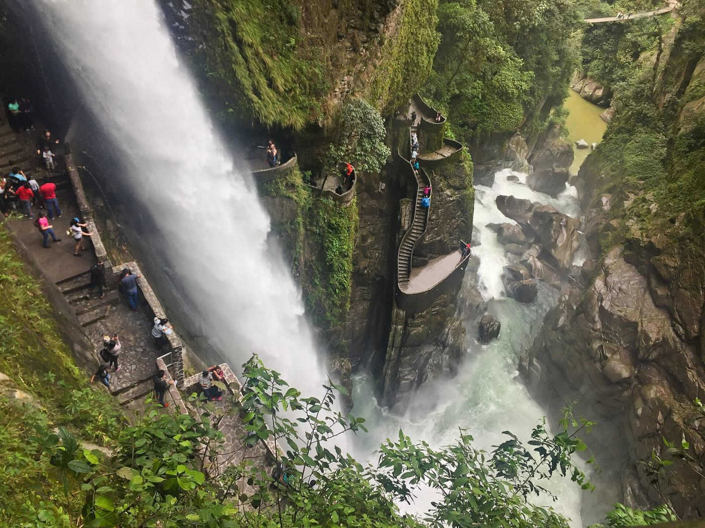
PlaneadoBaños
SIERRA · TungurahuaLa capital de la aventura, entre los Andes y la Amazonía. Aguas termales, la cascada del Pailón del Diablo y el columpio del fin del mundo.
Nuestro plan: Senderos de cascadas y las aguas termales, con calma.
-
08
 Planeado
PlaneadoChimborazo
SIERRA · ChimborazoEl pico más alto de Ecuador. Gracias al abultamiento ecuatorial, su cumbre es el punto de la Tierra más alejado de su centro.
Nuestro plan: Manejar hasta el refugio, tomar la foto y volver a bajar.
-
09
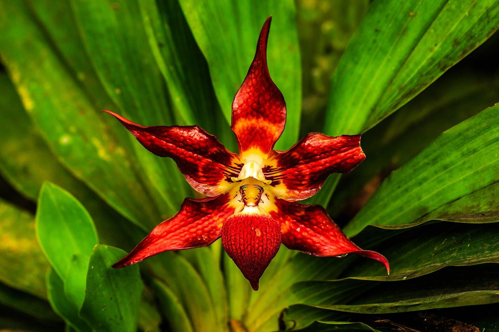
PlaneadoBosque nublado de Mindo
SIERRA · PichinchaBosque de neblina a unas dos horas de Quito, lleno de colibríes, mariposas, cascadas y fincas de chocolate.
Nuestro plan: Muy arriba en nuestra lista para un primer paseo de fin de semana.
-
10
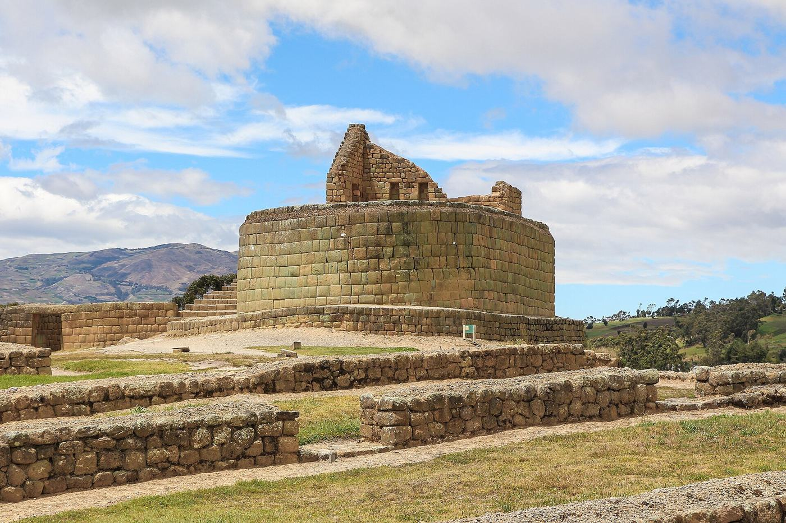
PlaneadoIngapirca
SIERRA · CañarLas ruinas incas más grandes de Ecuador, construidas sobre un sitio cañari. El Templo del Sol es lo más destacado.
Nuestro plan: Un paseo fácil de un día desde Cuenca.
-
11
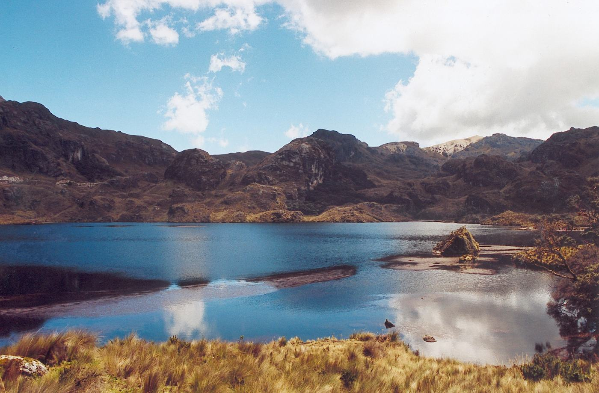
PlaneadoParque Nacional El Cajas
SIERRA · AzuayPáramo salvaje con cientos de lagunas glaciares, a unos 45 minutos de Cuenca.
Nuestro plan: Senderos cortos junto a las lagunas, cerca del centro de visitantes.
-
12
 Planeado
PlaneadoGuayaquil y el Malecón 2000
COSTA · GuayasLa ciudad más grande de Ecuador. El Malecón junto al río, el barrio Las Peñas y los 444 escalones del Cerro Santa Ana.
Nuestro plan: El Malecón es apto para coche de bebé. Los 444 escalones le tocan a Austin.
-
13
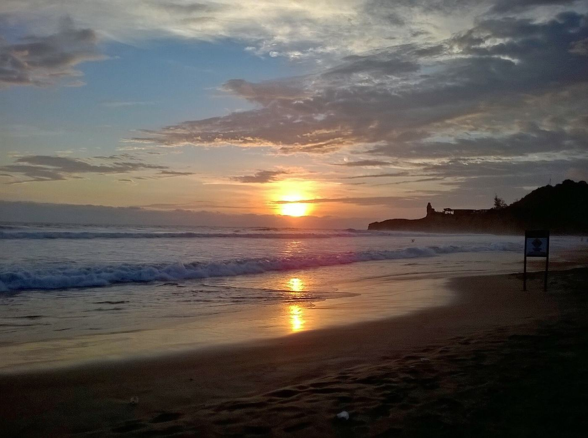
PlaneadoMontañita
COSTA · Santa ElenaEl famoso pueblo surfista de la costa, tranquilo de día y animado de noche.
Nuestro plan: Playa de día y clases de surf para Austin.
-
14
 Planeado
PlaneadoPuerto López e Isla de la Plata
COSTA · ManabíBase para el avistamiento de ballenas jorobadas (más o menos de junio a septiembre) y unas Galápagos en pequeño, con piqueros de patas azules.
Nuestro plan: Planear el viaje para la temporada de ballenas.
-
15
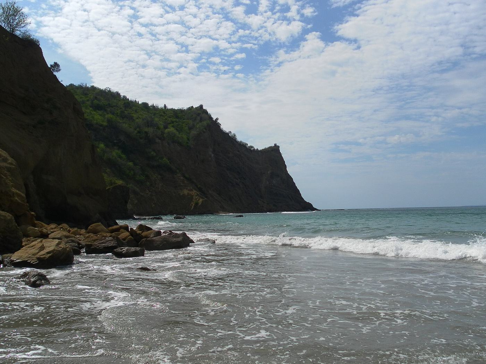
PlaneadoPlaya Los Frailes
COSTA · ManabíUna playa protegida en forma de media luna dentro del Parque Nacional Machalilla, sin construcciones a la vista.
Nuestro plan: Un día de playa con aguas tranquilas.
-
16
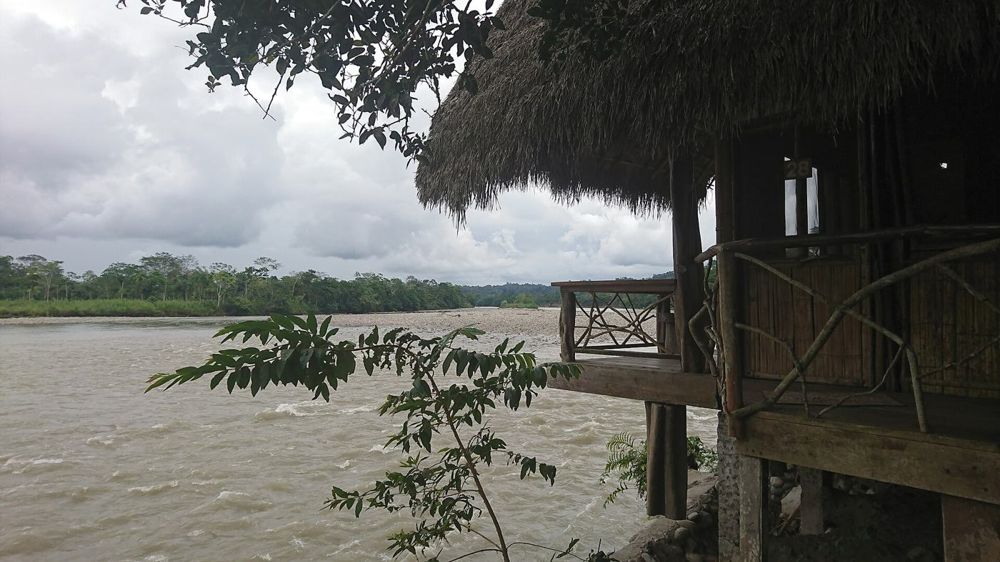
PlaneadoTena y el río Napo
AMAZONÍA · NapoLa puerta de entrada a la Amazonía desde la Sierra. Paseos en río, comunidades kichwa y cascadas.
Nuestro plan: Una estadía en un lodge cerca del pueblo.
-
17
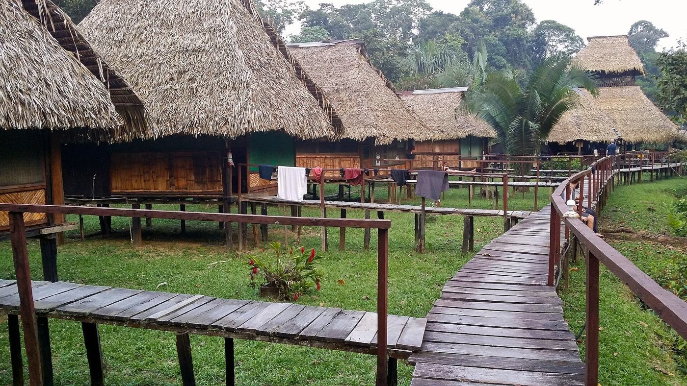
PlaneadoReserva Faunística Cuyabeno
AMAZONÍA · SucumbíosBosque inundado y lagunas de aguas negras con delfines rosados, monos y cientos de especies de aves.
Nuestro plan: Un viaje para cuando Mateo sea más grande.
-
18
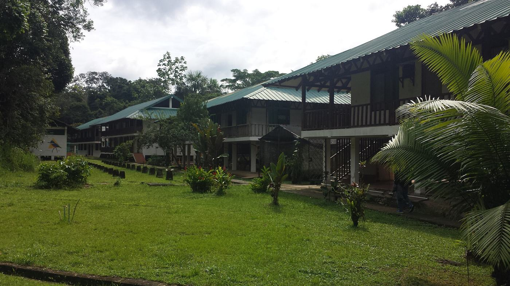
PlaneadoParque Nacional Yasuní
AMAZONÍA · OrellanaUno de los lugares con más biodiversidad del planeta. Lodges en plena selva y saladeros de loros.
Nuestro plan: El gran viaje a la Amazonía, algún día.
-
19
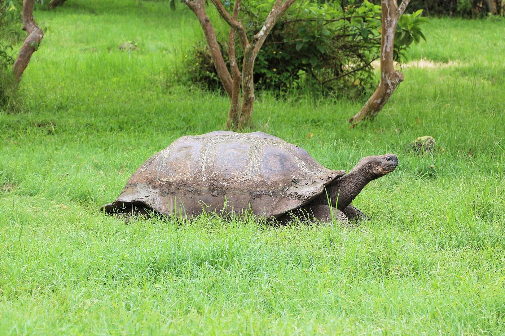
PlaneadoIsla Santa Cruz
GALÁPAGOSEl centro de las islas. Tortugas gigantes en la parte alta, la Estación Científica Charles Darwin y Tortuga Bay.
Nuestro plan: Nuestra primera base en Galápagos.
-
20
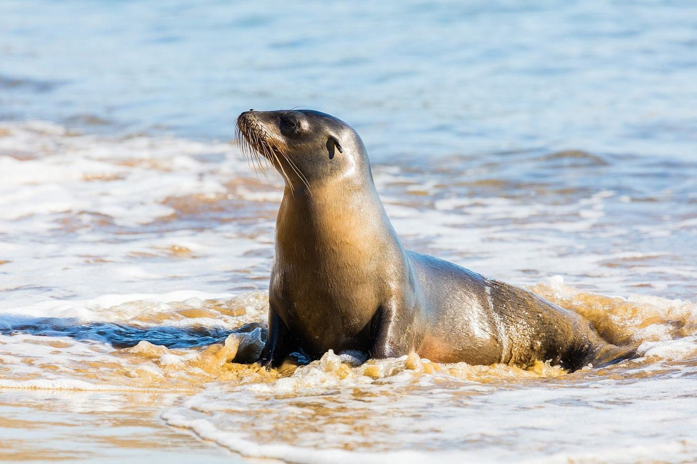
PlaneadoIsla San Cristóbal
GALÁPAGOSLobos marinos en cada banca, el León Dormido (Kicker Rock) y uno de los mejores snorkels de las islas.
Nuestro plan: Lobos marinos a la altura de los ojos. A Mateo le va a encantar.